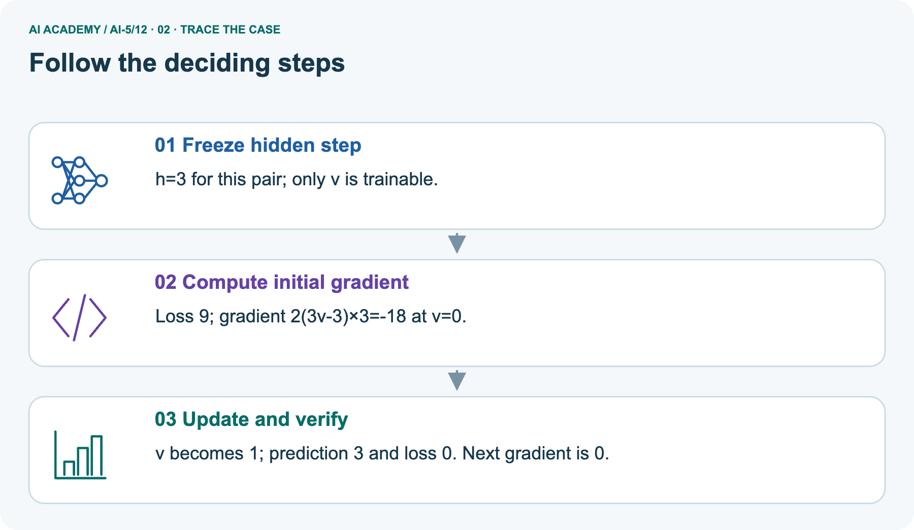
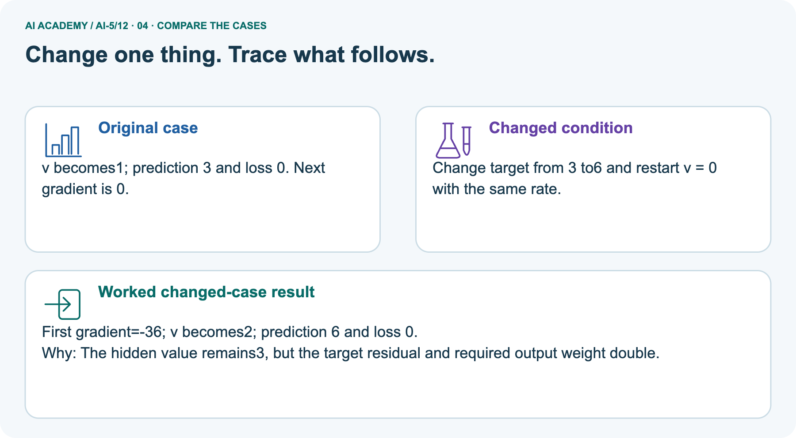
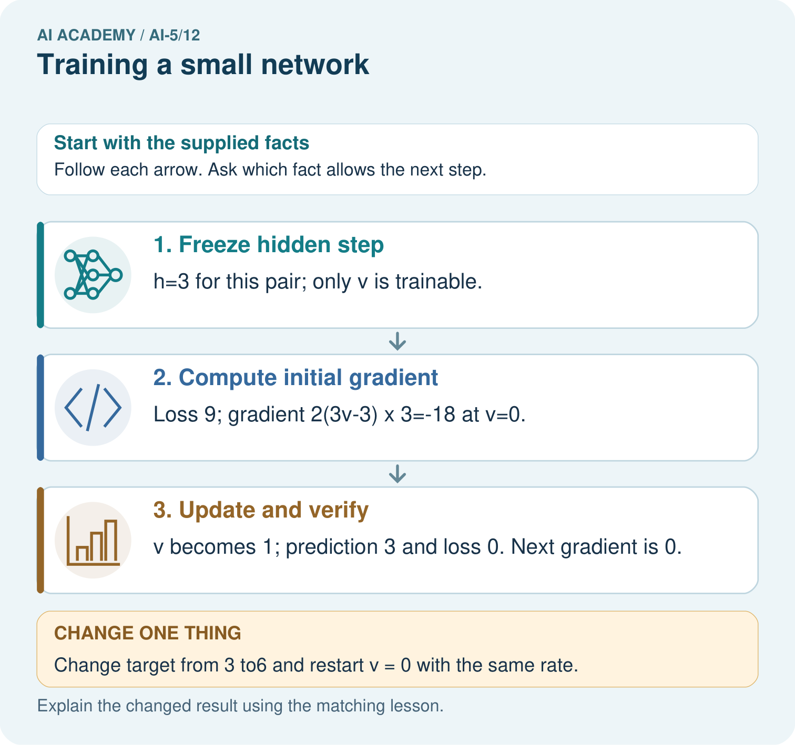
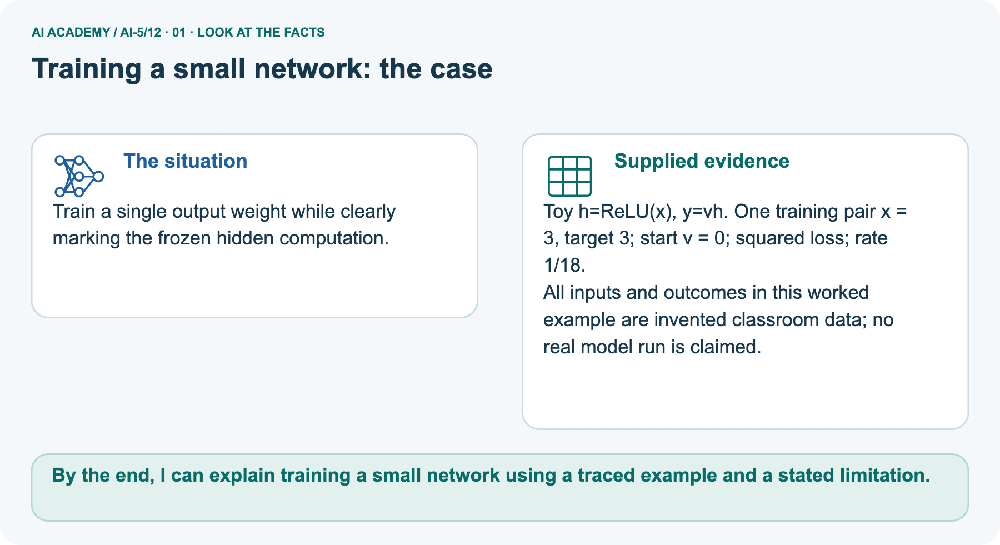
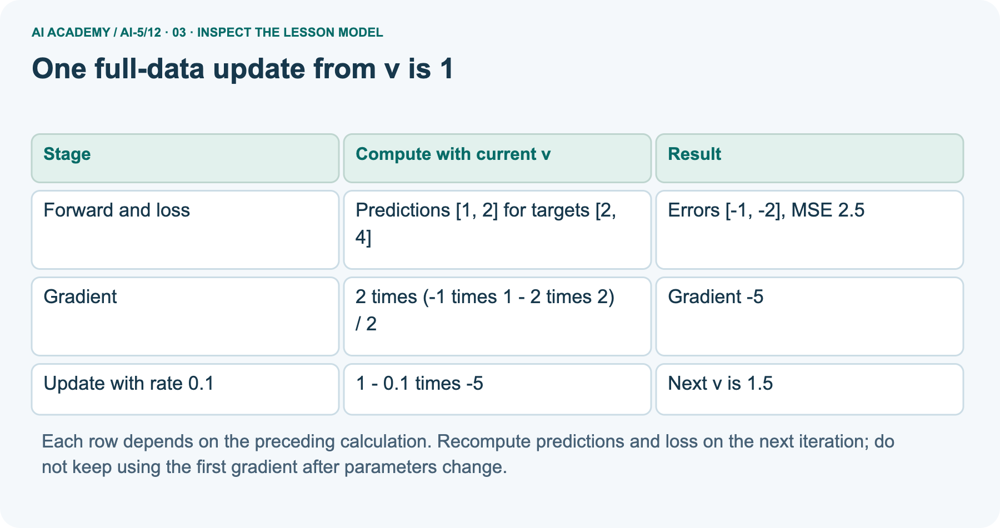
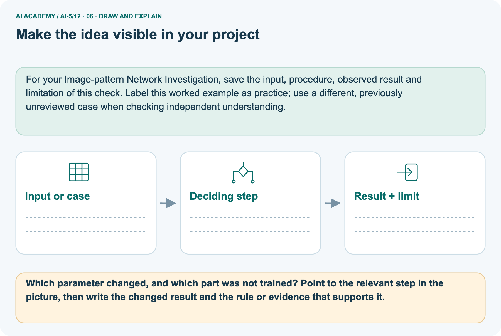

AI Academy · Level 5 · Grade 10 · Week 12 · Student lesson
Training a small network
Learn to understand, design, build, test and explain AI systems responsibly.
Project: Image-pattern Network Investigation
THE CONNECTED WEEK
Freeze the hidden step. Train one weight. Record every state.
Trace a complete restricted-network training loop with honest update counts and evaluation limits.
Keep one habit: Full configuration → five-state/four-update ledger → pictured one-pair fit → reserved/negative-input checks → independent new training pair.
Main lesson · Section 1
What actually changes during this training loop?
Repeat a complete calculation while keeping frozen values and the update budget explicit.
Learning goals
I can trace repeated forward loss gradient and update steps.
I can keep frozen parameters distinct from the trained parameter.
I can report training results with their evaluation limits.
Retrieve the saved-state update
Close your notes first. A rough first answer helps us choose the right starting point; it is not a score for your ability.
Without opening the old lesson, explain one key idea from Updating parameters. Give an example and a mistake that the idea helps you avoid.
Without opening the old lesson, explain one key idea from Slopes and local change. Give an example and a mistake that the idea helps you avoid.
Without opening the old lesson, explain one key idea from Forward passes by hand. Give an example and a mistake that the idea helps you avoid.
After trying, check the relevant lesson or ask your teacher. Change the part of your explanation that the evidence shows was wrong.
Prerequisite and starting response
Why should all parameters in one simultaneous update use the same saved gradient?
End goal
By the end, I can explain training a small network using a traced example and a stated limitation.
Earlier wording, alternatives and picture transcripts
Your learning target
Remember before reading
This week you will practise:
Trace repeated forward loss gradient and update steps
Keep frozen parameters distinct from the trained parameter
Report training results with their evaluation limits
Retrieve what you already know
This week’s end goal
Main lesson · Section 2
Train one output weight,not every network value
The hidden computation and both biases are frozen throughout this experiment.
Complete model,data,objective,start,rate and budget
Use one hidden ReLU unit h = ReLU(x) and an output y = vh. The hidden input weight is fixed at 1, its bias is fixed at 0, and the output bias is fixed at 0. Only output weight v is trained.
This is a restricted two-layer network, not training every parameter of a general network.
Training pairs are (x, target) = (1, 2) and (2, 4). Both x values are positive, so hidden activations are 1 and 2. Define ordinary MSE over both rows.
Start at v = 0 and use learning rate 0.1 for exactly four full-data updates. The declared budget prevents stopping only when a preferred result appears.
All five recorded states for four updates
| Update count | v | Training MSE |
|---|---|---|
| 0 | 0 | 10 |
| 1 | 1 | 2.5 |
| 2 | 1.5 | 0.625 |
| 3 | 1.75 | 0.15625 |
| 4 | 1.875 | 0.0390625 |
Interpret the state and update counts
Each row evaluates the parameter value after that many updates. Row zero records the starting model. The loss decreases in this specific experiment; that pattern is not a promise for all networks or rates.
Name given and missing facts
Main lesson · Section 3
Trace forward,loss,gradient and update through every state
Five printed states do not mean five updates.
Derive the mean-loss gradient
Let errors be v - 2 and 2v - 4. MSE is their squared sum divided by 2, which simplifies to 2.5 times (v - 2) squared. Its gradient with respect to v is 5 times (v - 2).
At v = 0 the gradient is -10, so the first update gives v = 0 - 0.1 times -10 = 1.
Complete five-state training ledger
| State after this many updates | v | Predictions on fixed h[1, 2] | Errors against[2, 4] | Training MSE | Gradient for next update | Next v |
|---|---|---|---|---|---|---|
| 0 | 0 | [0, 0] | [−2, −4] | 10 | -10 | 1 |
| 1 | 1 | [1, 2] | [−1, −2] | 2.5 | -5 | 1.5 |
| 2 | 1.5 | [1.5, 3] | [−.5, −1] | 0.625 | -2.5 | 1.75 |
| 3 | 1.75 | [1.75, 3.5] | [−.25, −.5] | 0.15625 | -1.25 | 1.875 |
| 4 | 1.875 | [1.875, 3.75] | [−.125, −.25] | 0.0390625 | Stop:four-update budget | No further update |
Frozen-versus-trained value register
| Value in this restricted network | Training status |
|---|---|
| Hidden input weight 1 | Frozen |
| Hidden bias 0 | Frozen |
| ReLU function | Fixed function, no fitted numerical parameter here |
| Output weight v | Only trainable value; start 0, end 1.875 after four updates |
| Output bias 0 | Frozen |
| Data, rate.1, mean objective, four-update budget | Declared experiment configuration, not extra model parameters |
Complete runnable four-update loop
train = [(1.0, 2.0), (2.0, 4.0)]
v = 0.0
rate = 0.1
for step in range(5):
hs = [max(0.0, x) for x, target in train]
errors = [v * h - target
for h, (x, target) in zip(hs, train)]
loss = sum(e * e for e in errors) / len(train)
print(step, v, loss)
if step == 4:
break
gradient = 2 * sum(e * h for e, h in zip(errors, hs)) / len(train)
v = v - rate * gradientThe factor 2 comes from squared error; division by the number of rows makes this the gradient of the mean, not the sum. The code uses every training row for each update. It prints five states but performs only four updates.
All data are supplied fictional numbers.
Connect each visual step to the loop
Point to the input, the deciding step and the result in this week’s visual. Explain the same step in ordinary words. A picture helps when you can say what each part represents.
Earlier wording, alternatives and picture transcripts
Connect the picture and the explanation
Main lesson · Section 4
Change one stated condition and restart the experiment
Do not mix a sum-loss gradient with the declared mean-loss objective.
Current mean-versus-sum task
At v = 1, the sum of squared errors is 5. A learner uses gradient -10 with rate 0.1. Explain the mismatch with this lesson and give the next v under MSE.
Predict the pictured target change
Change: Change target from 3 to6 and restart v = 0 with the same rate.
Check after predicting
Prediction: First gradient=-36; v becomes 2; prediction 6 and loss 0.
Reason: The hidden value remains 3, but the target residual and required output weight double.
Earlier wording, alternatives and picture transcripts
Compare a familiar case with a changed case
Change one thing in the pictured case
Main lesson · Section 6
See which value is fitted and which computation stays frozen
The loss changes because v changes;the hidden representation does not learn here.
Complete pictured one-pair facts and scope
Train a single output weight while clearly marking the frozen hidden computation.
Toy h=ReLU(x), y=vh. One training pair x = 3, target 3; start v = 0; squared loss; rate 1/18.
All inputs and outcomes in this worked example are invented classroom data; no real model run is claimed.
The picture is a separate one-pair experiment:x3, target 3, h3, start v0, squared error, rate 1/18. Initial gradient−18 gives v1, prediction 3, loss 0; the next gradient is0. Changing only its target to6 and restarting v0 gives initial gradient−36, v2, prediction 6, loss 0. This specially chosen rate and one pair differ from the main two-row MSE experiment.
Exact fit here does not establish memorization, learned hidden features or general image-classifier performance.
Trace frozen h,gradient and fitted v



Read the picture one step at a time
Only the output weight v is being fitted in this toy network; the hidden ReLU is fixed. The training input gives hidden value three.
Squared-error slope points v from zero towards one, and this specially chosen rate reaches one in a single update. Zero loss on one training pair is exact fitting of that pair, not evidence about other inputs.
Predict the restarted doubled target
Change one thing: Change target from 3 to6 and restart v = 0 with the same rate. Predict the result before checking the explanation. What remains the same?
Check after predicting



Explain the trained value and evidence limits
Zero loss on one example is an exact fit to that recorded example. It does not by itself establish memorisation or a generally useful image classifier.
Read the labelled picture: Which parameter changed, and which part was not trained? Point to the relevant step in the picture, then write the changed result and the rule or evidence that supports it.
Try the main v1.5update
One full-data update from v is 1
Earlier wording, alternatives and picture transcripts
Learn from the worked case
Cover the result before checking it. Say what is given, choose the procedure, and follow one step at a time. Then uncover the result and explain your first mismatch. Ask why a step is allowed, not only what number it produces.
A pictorial worked case: Training a small network
The facts we will use



Why this result follows
What this example does not establish
Main lesson · Section 7
Keep training evidence separate from the reserved demonstration
A fixed hidden representation can make some distinctions impossible.
Complete reserved-row and negative-input explanations
After four updates, freeze v = 1.875. A reserved demonstration pair (3, 6), not used in the updates, receives prediction 5.625 and squared error 0.140625. Report it separately from training MSE 0.0390625.
One synthetic held-out example is a small demonstration, not evidence of broad real-world reliability.
The frozen representation has a limit: for any negative x, ReLU gives h = 0 and the output is always 0.
If the intended task were y = 2x for all real inputs, x = -1 would need target -2, so this model would fail there regardless of v. Training cannot recover distinctions that the fixed hidden representation removes.
Complete post-freeze paired checks
| After freezing main v1.875 | h | Prediction | Target | Squared error / status |
|---|---|---|---|---|
| Training row x1 | 1 | 1.875 | 2 | 0.015625 |
| Training row x2 | 2 | 3.75 | 4 | 0.0625 |
| Reserved demonstration x3 | 3 | 5.625 | 6 | .140625; not used in the four updates |
| Representation probe x−1 under proposed y2 xrule | 0 | 0 | -2 | 4 for any v; structural counterexample, not another training row |
Try the reserved-row arithmetic and split rule
At final v = 1.875, calculate the prediction and squared error on reserved pair (3, 6). May its target be included in the four reported training updates?
Earlier wording, alternatives and picture transcripts
Locate the earliest unsupported step
Main lesson · Section 8
Practise repeated-state reasoning with less help
Name the objective,gradient and exact update count.
Current task and response
At v = 0, calculate both predictions, errors, MSE and gradient, then update at rate 0.1.
Supported W2record
Use workbook W2 for the connected example “Training a small network”. First fill the input and rule boxes. Try the middle steps before asking for a hint. After a hint, try the next step yourself.
| Plan | Do | Check |
|---|---|---|
| What is given? Which rule or procedure applies? | Record each intermediate step. | Does the result follow? What remains unknown? |
Explain your trace to a partner. Your partner points to one step to check. Swap roles on the next case. Each person writes their own explanation.
Individual misconception check
Use the worked case for Training a small network. Proposed explanation: “Every parameter was trained”. Decide whether this explanation is supported.
Point to the step or supplied fact that decides; explain your repair if needed.
Answer on your own before discussion. If you are unsure, say which step you need help with.
Pictured frozen-versus-trained reasoning
Which parameter changed, and which part was not trained? Point to the relevant step in the picture, then write the changed result and the rule or evidence that supports it.
Reserve the independent new training pair
This is supported practice. Keep the separately named independent case for an attempt before feedback.
Earlier wording, alternatives and picture transcripts
Practise with less help: Check the mean convention
Check your reasoning
Explain the picture
Main lesson · Section 9
Run the complete restricted-network training experiment
All data,initialization,loss,rate,gradients and stopping budget are supplied.
Current objective-scaling task and complete loop
At v = 1, the sum of squared errors is 5. A learner uses gradient -10 with rate 0.1. Explain the mismatch with this lesson and give the next v under MSE.
train = [(1.0, 2.0), (2.0, 4.0)]
v = 0.0
rate = 0.1
for step in range(5):
hs = [max(0.0, x) for x, target in train]
errors = [v * h - target
for h, (x, target) in zip(hs, train)]
loss = sum(e * e for e in errors) / len(train)
print(step, v, loss)
if step == 4:
break
gradient = 2 * sum(e * h for e, h in zip(errors, hs)) / len(train)
v = v - rate * gradientComplete normal,zero,missing,held-out and budget probes
| Complete loop probe | Expected result / action |
|---|---|
| Normal declared two-row training | Four updates end v1.875, training MSE.0390625 |
| At v1:sum versus mean | SSE 5, MSE 2.5, sum-gradient−10, mean-gradient−5; mean update gives v1.5 |
| At v2on the training rows | Both predictions exact, gradient 0, no parameter change |
| Hidden zero boundary x0 | h0, prediction 0 for any finite v; requires a target before computing loss |
| Missing target in a training row | Outside supplied complete-pair contract; request/review before fitting, not guess 0 |
| Reserved pair(3, 6) | Score only after freeze; do not include in the four claimed updates |
| Negative x−1 under y2 xproposal | h0, prediction 0, target−2, error 4 regardless of v |
| Extra update after state 4 | Changes the declared training budget; version and report it rather than call it the original run |
Predict,run or trace,and retain all states
Predict all five states and four gradients before running or tracing the complete loop. Compare every v, prediction, error and loss against the supplied ledger; retain actual stdout or mark paper trace. Identify every frozen value. The code uses the two supplied complete numeric pairs and no missing-data validator. Keep reserved-row scoring outside fitting.
A revised budget, objective, rate or hidden computation is a new configuration. Do not call one exact training fit either proved memorization or proved generalization.
On paper, trace the supplied procedure. If code is provided, predict before running it in a local practice file. Never write an expected answer as though it were an observed run.
Keep the evidence ledger
| Record | Your evidence |
|---|---|
| Given input and fixed rule | |
| Prediction before checking | |
| Actual result, or “not run” | |
| First mismatch and one explanation | |
| Boundary or missing input and expected response |
Before trying: what do I expect, and why? While trying: which step could first go wrong? Afterwards: what did I actually observe, and what should change? Keep “not run” if you only traced the procedure.
Earlier wording, alternatives and picture transcripts
Predict, investigate and preserve the evidence
Plan → try → check
Main lesson · Section 14
Try alone: a different one-pair training experiment
Use its target,rate and two-update budget rather than the worked experiment’s numbers.
Complete new independent training task
Keep h = ReLU(x), train only v, and use one pair (2, 2), v = 0 and rate 0.125. Use squared error and gradient 2 times (2v - 2) times 2. Perform two updates, reporting each new v and loss.
Explain why the second update changes nothing.
First attempt and support record
Attempt this case before feedback. Record any help. Earlier examples below are further practice; a case already practised with feedback cannot establish fresh transfer.
Use feedback after trying
Attempt the independent case before hints. Record whether you worked alone, used a hint or followed a model. After feedback, fix the first unsupported step and explain why it changed.
A later check uses a changed case, not a copied answer.
Earlier wording, alternatives and picture transcripts
Independent case: Run a new training case independently
Attempt this without hints
Keep h = ReLU(x), train only v, and use one pair (2, 2), v = 0 and rate 0.125. Use squared error and gradient 2 times (2v - 2) times 2. Perform two updates, reporting each new v and loss.
Explain why the second update changes nothing.
Record support used: none, hint or teacher explanation. After feedback, a different case is needed to demonstrate independence.
Use feedback to improve
Main lesson · Section 11
Save the exact restricted experiment configuration
A reader should know which parameter learned and which values stayed fixed.
Project artifact and evidence table
Add a labelled training a small network evidence sheet to Image-pattern Network Investigation. Show how you can trace repeated forward loss gradient and update steps.
Use the supplied fictional case and keep its inputs, intermediate steps, calculation or prediction, and limitation. Connect this record to last week’s record; a matching answer without a trace is insufficient.
| Project evidence | Record |
|---|---|
| Component and version | |
| Inputs permitted at prediction time | |
| Trace and comparison with earlier work | |
| Failure, limit and human review |
Actual run/trace and limits
For your Image-pattern Network Investigation, save the input, procedure, observed result and limitation of this check.
Label this worked example as practice; use a different, previously unreviewed case when checking independent understanding.
Earlier wording, alternatives and picture transcripts
Evidence for your project
Main lesson · Section 16
Finish with one complete cycle and one representation limit
Distinguish a training state from an evaluation claim.
Retrieve and explain
Close your notes. Explain this goal in your own words: Trace repeated forward loss gradient and update steps
Plan a changed-case return
If you are unsure, return to the worked picture and explain one arrow. If you are ready, change an input or assumption and justify your prediction.
Save your workbook evidence. At the next review, try a different case before opening your old answer.
Reference bank and extra practice
Choose the reference that helps your next step.
Reference · Use the mathematical words precisely
Reference · Section 5
Reference · Use the mathematical words precisely
Connect each term to a value or step in the current example.
Vocabulary and your explanation
| Word | Meaning |
|---|---|
| Training loop | A repeated sequence of prediction, loss calculation, gradient calculation and parameter update |
| Frozen parameter | A model value intentionally held fixed during fitting |
| Training budget | A declared limit on updates or other training resources |
| Learning curve | A record of a performance measure across training steps or time |
Extra challenge · Explain a stronger case
Reference · Section 10
Extra challenge · Explain a stronger case
Choose the next challenge after the main route.
Explain,repair and extend
At v = 0, calculate both predictions, errors, MSE and gradient, then update at rate 0.1.
At final v = 1.875, calculate the prediction and squared error on reserved pair (3, 6). May its target be included in the four reported training updates?
For the lesson architecture at x = -1, give h and prediction for any finite v. If target is -2, calculate squared error and explain why changing v cannot fix it.
Explain → apply → challenge
Reference · Check the representation and its limits
Reference · Section 12
Reference · Check the representation and its limits
Use after practice;reserve the new independent one-pair two-update training task for the first individual attempt.
Current explanation and response
Save the model formulas, frozen values, trained parameter, initial value, data pairs, loss definition, learning rate, update budget and the printed trace. State that these numbers are a classroom experiment.
Changing a setting after seeing reserved outcomes makes those outcomes development evidence for that revision.
Next week separates an update, a batch and an epoch when training uses more than one group of examples.
For the lesson architecture at x = -1, give h and prediction for any finite v. If target is -2, calculate squared error and explain why changing v cannot fix it.
Extra practice · Revisit the complete trace
Reference · Section 13
Extra practice · Revisit the complete trace
Predict before reading the supplied steps.
Complete trace and evidence
Complete evidence record
One full-data update from v is 1
Follow the input through the stated procedure to its result. Cover the result first, predict it, then explain every intermediate step. The text/table accompanies the figure so the example can be read without colour.
Reference · The earlier route checklist
Reference · Section 15
Reference · The earlier route checklist
Use one main route rather than repeating the lesson.
Targets,route and first prediction
Start with this question: Train a single output weight while clearly marking the frozen hidden computation.
| By the end, I can | How I will show it |
|---|---|
| Trace repeated forward loss gradient and update steps | Explain the deciding step, show a trace or test, and state one limit. |
| Keep frozen parameters distinct from the trained parameter | Explain the deciding step, show a trace or test, and state one limit. |
| Report training results with their evaluation limits | Explain the deciding step, show a trace or test, and state one limit. |
Remember → watch and explain → try with help → investigate → try independently → keep project evidence. Your teacher may spread this lesson across several classes.
Keep your first prediction. Compare it with what the evidence shows and explain any change.
Extra practice · Predict,check and repair
Reference · Section 17
Extra practice · Predict,check and repair
Keep supported feedback separate from the independent case.
First supported question and optional hint
Train a single output weight while clearly marking the frozen hidden computation.
Which labelled step matches this detail? v becomes 1; prediction 3 and loss 0. Next gradient is 0.
1. Freeze hidden step
2. Update and verify
3. Compute initial gradient
Hint if needed: Read the steps in the pictorial case. Match the supplied detail to the stage that performs or records it.
Practice 1: explain the deciding evidence
Check after the first attempt
After your attempt, compare with the supported explanation: Update and verify v becomes 1; prediction 3 and loss 0. Next gradient is 0. Only the output weight v is being fitted in this toy network; the hidden ReLU is fixed.
The training input gives hidden value three. Squared-error slope points v from zero towards one, and this specially chosen rate reaches one in a single update.
Zero loss on one training pair is exact fitting of that pair, not evidence about other inputs.
Changed-case question and optional hint
Changed-case practice: Change target from 3 to6 and restart v = 0 with the same rate. Which conclusion is supported by the supplied facts?
1. First gradient=-36; v becomes 2; prediction 6 and loss 0.
2. We can decide the result without examining the changed input or the procedure.
3. This one example guarantees correct results for every future input.
Hint if needed: Use the changed condition and the deciding step in the pictorial trace. The answer must say what follows from those facts.
Practice 2: explain the deciding evidence
Check after the changed attempt
After your attempt, compare with the supported explanation: First gradient=-36; v becomes 2; prediction 6 and loss 0. The hidden value remains 3, but the target residual and required output weight double.
Repair and retain the record
Review Updating parameters (ai-5/11). Goal: Apply a learning rate to an ordered gradient. Short practice: Why must new loss be recomputed rather than assumed smaller?
Point to the relevant step in the picture, then write the changed result and the rule or evidence that supports it.. Return to this week and explain what you changed.
Review Slopes and local change (ai-5/9). Goal: Calculate an average rate of change over a stated interval. Short practice: Which calculation disproves “any increase helps”?
Point to the relevant step in the picture, then write the changed result and the rule or evidence that supports it.. Return to this week and explain what you changed.
Review Forward passes by hand (ai-5/6). Goal: Record scores and activations in dependency order. Short practice: Why should feedback identify h before correcting only y?
Point to the relevant step in the picture, then write the changed result and the rule or evidence that supports it.. Return to this week and explain what you changed.
The browser lab lets you edit the supported Python examples already included in this lesson. Predict first, run, inspect the actual output or error, change one input, then run again.
Keep code, predictions, actual results and a reasoned revision together. On paper, label your result as a trace rather than an execution.
Use Download completed work in the hosted lesson to export your answers, reflections, practice feedback and code-run evidence. Open the HTML copy to read or print it.
Drafts stay in this browser when storage is available; clear drafts on a shared device.
Earlier wording, alternatives and picture transcripts
Use this supported practice once, in the browser or on paper. Keep the reserved independent assessment for a separate first attempt before teacher feedback.
Repair a missing building block
Predict, run and debug
Keep your completed work
Reference · Six-picture concept journey
Reference · Section 18
Reference · Six-picture concept journey
Choose the picture that supports the current explanation.
01. Training a small network: the case



Train a single output weight while clearly marking the frozen hidden computation. Supplied facts: Toy h=ReLU(x), y=vh. One training pair x = 3, target 3; start v = 0; squared loss; rate 1/18.
All inputs and outcomes in this worked example are invented classroom data; no real model run is claimed.
Point to the given fact that matters most. Explain why it matters.
02. Follow the deciding steps
Freeze hidden step: h=3 for this pair; only v is trainable. → Compute initial gradient: Loss 9; gradient 2(3v-3)×3=-18 at v=0. → Update and verify: v becomes 1; prediction 3 and loss 0. Next gradient is 0.
Point to each numbered stage and explain which recorded input it uses.
03. One full-data update from v is 1



One full-data update from v is 1. Forward and loss | Predictions [1, 2] for targets [2, 4] | Errors [-1, -2], MSE 2.5. Gradient | 2 times (-1 times 1 - 2 times 2) / 2 | Gradient -5.
Update with rate 0.1 | 1 - 0.1 times -5 | Next v is 1.5
Read the labels and values. Explain the relationship the model shows.
04. Change one thing. Trace what follows.
Original case: v becomes 1; prediction 3 and loss 0. Next gradient is 0. Changed condition: Change target from 3 to6 and restart v = 0 with the same rate.
Expected result: First gradient=-36; v becomes 2; prediction 6 and loss 0. Reason: The hidden value remains 3, but the target residual and required output weight double.
Predict before checking the worked changed-case result. Name what changed and what the supplied facts allow you to conclude.
05. Connect the explanation to its limit
![Only the output weight v is being fitted in this toy network; the hidden ReLU is fixed. The training input gives hidden value three. Squared-error slope points v from zero towards one, and this specially chosen rate reaches one in a single update. Zero loss on one training pair is exact fitting of that pair, not evidence about other inputs. Limit: Zero loss on one example is an exact fit to that recorded example. It does not by itself establish memorisation or a generally useful image classifier.](../assets/academy-story-ai-5-12-05.png)

Only the output weight v is being fitted in this toy network; the hidden ReLU is fixed. The training input gives hidden value three. Squared-error slope points v from zero towards one, and this specially chosen rate reaches one in a single update. Zero loss on one training pair is exact fitting of that pair, not evidence about other inputs. Limit: Zero loss on one example is an exact fit to that recorded example. It does not by itself establish memorisation or a generally useful image classifier.
Explain the case, then point to a limit on the claim.
06. Make the idea visible in your project



For your Image-pattern Network Investigation, save the input, procedure, observed result and limitation of this check.
Label this worked example as practice; use a different, previously unreviewed case when checking independent understanding. Draw your input, deciding step, result and limit.
Supported question: Which parameter changed, and which part was not trained? Point to the relevant step in the picture, then write the changed result and the rule or evidence that supports it.
Draw your project trace and justify the deciding step using evidence.